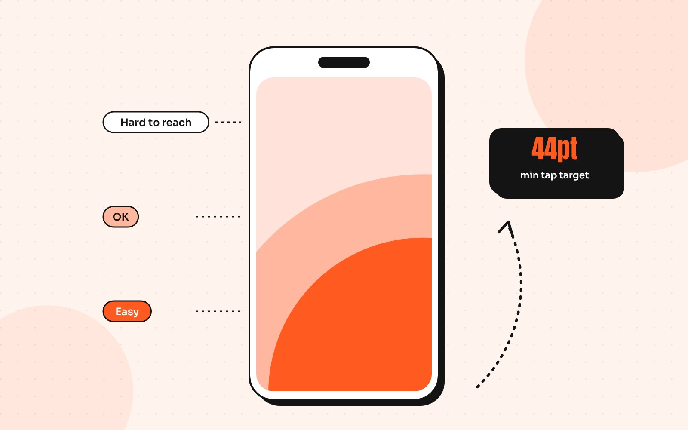
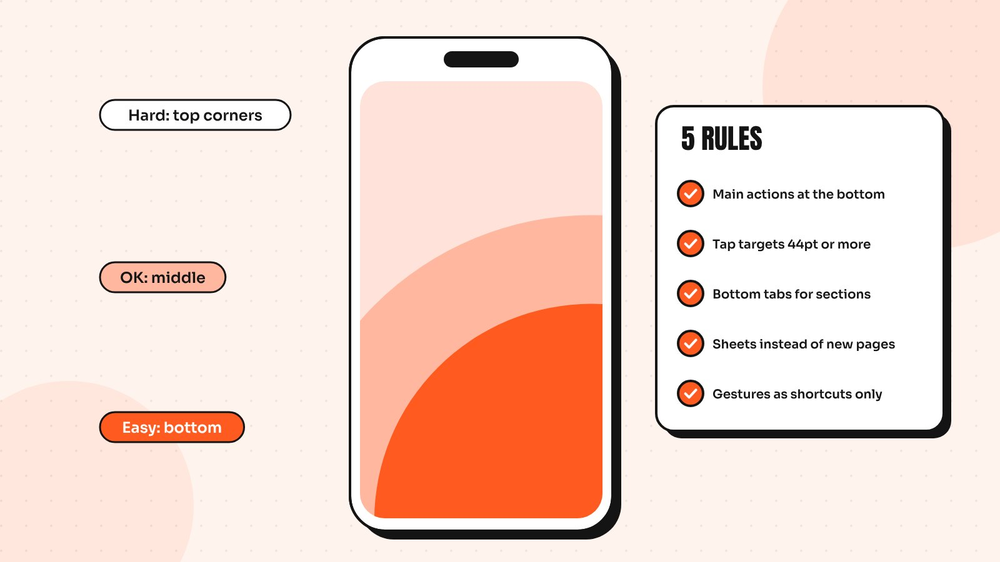

5 Rules for Thumb-Friendly Mobile App Design
Your app is used on a bus, in a queue and with a coffee in the other hand. These five rules make it easy to use with one thumb.

Desktop design assumes a mouse that can reach every pixel with the same effort. Phones are different. Much of the time people hold their phone in one hand and tap with their thumb, a pattern described in Steven Hoober’s research on how people hold their phones. That thumb has a comfortable range and everything outside it takes a stretch, a shuffle or a second hand.
Designing for the thumb isn’t about following a trend. It’s about making the most frequent actions the easiest ones. Here are the five rules I follow on every mobile app project.

Rule 1: Put frequent actions in the easy zone
The bottom middle of the screen is the easiest area to reach. The top corners are the hardest. So the actions people take most often, such as primary buttons, navigation and the “add” action, belong at the bottom. Rarely used settings can live higher up.
A floating action button or a sticky bottom button is often better than a “Save” link tucked in the top right corner, especially on large phones.
Rule 2: Make tap targets big enough
Small buttons cause mis-taps and mis-taps cause frustration. The WCAG 2.2 target size guideline sets a minimum of 24 by 24 CSS pixels and Apple’s and Google’s platform guidance recommends around 44 to 48 points for comfortable touch targets. I treat 44 as my working minimum for anything people tap often.
- Make the whole row tappable in lists, not just the small arrow
- Leave enough space between neighbouring buttons
- Increase the hit area of small icons without making them look bigger
Rule 3: Use bottom navigation for main sections
For apps with three to five main sections, a bottom tab bar is easier to reach than a hamburger menu in the top corner. It also keeps the structure of the app visible, so people always know where they are and what else is available.
Keep the labels short and always show them. Icons alone are often ambiguous and a label removes the guesswork.
Rule 4: Bring content down to the thumb
On large screens, important content and controls can drift out of reach. A few patterns help:
- Bottom sheets for filters, options and quick actions instead of full-screen pages
- Search bars placed at the bottom on content-heavy screens
- Pull-down gestures that bring the top of the screen within reach
- Keyboards that open with the right type, such as numbers for amounts
Rule 5: Make gestures optional, never required
Swipes are fast for people who know them, but invisible to everyone else. Use them as shortcuts, not the only way to do something. If swiping a card deletes it, there should also be a visible delete option and an undo for when someone swipes by accident.

Test it with one hand
The quickest test is simple: use your own app with one hand while standing up. Try the five most common tasks. Every time you need to stretch, shuffle the phone or use your other hand, write it down. Then watch a few real users do the same.
Thumb-friendly design pairs naturally with good onboarding. If you’re working on a new app, read my guide to mobile app onboarding UX next or see more of my mobile app work.
Send me your screens and I’ll show you where users drop off and what to fix first.
Quick answers
What is the thumb zone in mobile design?
The thumb zone is the area of a phone screen a person can comfortably reach with their thumb while holding the phone in one hand. The bottom middle is easiest to reach, while the top corners are the hardest.
What is the minimum tap target size for mobile apps?
WCAG 2.2 sets a minimum of 24 by 24 CSS pixels for accessibility, while Apple and Google recommend around 44 to 48 points for comfortable touch targets. Bigger targets reduce mis-taps.
Is a hamburger menu bad for mobile apps?
Not always. It works for secondary pages like settings, but main sections are easier to find and reach in a bottom navigation bar with clear labels.